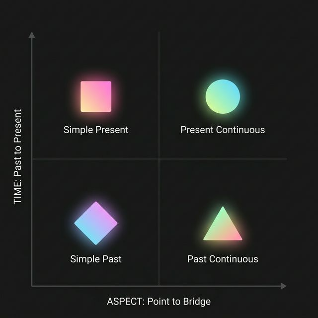

SIMPLE PAST
Olay oldu, bitti ve mühürlendi. Şu anki gerçekliğimizle hiçbir teması yoktur. Sadece bir 'Log Kaydı'dır.
Örn: I lost my keys.
İki Eksenin Kesişimi (Tense x Aspect)
Olay oldu, bitti ve mühürlendi. Şu anki gerçekliğimizle hiçbir teması yoktur. Sadece bir 'Log Kaydı'dır.
Sadece geçmişteki iki olaydan hangisinin daha eski olduğunu netleştirmek için kullanılır. 'Geçmişin Geçmişi'dir.
Eylem geçmişte oldu ama skoru, tamamlanmış ürünü veya tecrübesi şu an masada aktif.
Eylem geçmişte başladı, belki yeni bitti ama sürecin yorgunluğu/terlemesi (fiziksel izi) şu an aktif.
